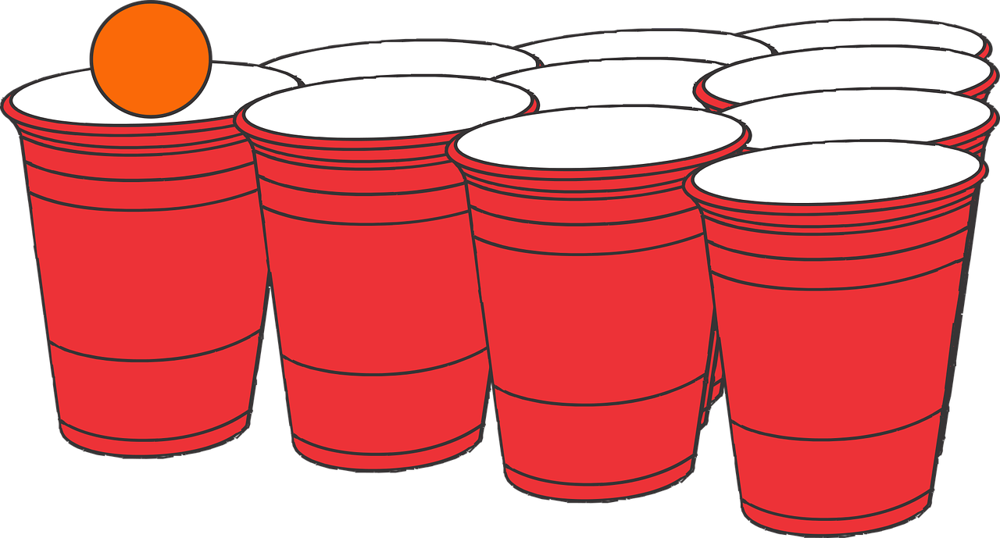

**PSEUDOCODE ALERT**
*CHALLANGE
Our challange was to creaet pseudocode for a quick flash game. We choose to ask chatgpt to create a beer pong mini game, which is posted below.
*PROBLEMS
Clarifiing the pre code command to format the code on site correctly.
*PSEUDOCODE
//Initialize the Game:
//Create a rectangular game board with cups arranged in a triangle formation at each end.
//Set up two teams (or players), often Team A and Team B.
//Initialize game state variables, including scores for each team and the game mode.
//Start the Game Loop.
//Game Loop:
//while (Game is not over):
//Render the Game Board.
//Get Player Input for both teams (e.g., aiming and throwing the ball).
//Calculate the Ball's Trajectory:
//Determine the ball's path based on the input and physics simulation.
//Check for Ball-Cup Collisions:
//Detect if the ball hits any of the cups.
//Remove the hit cup if a collision occurs and update the score.
//Check for Game Over:
//Check if one team reaches a winning score or if the game should end for other reasons.
//End Game:
//Display a message indicating the winning team.
//Ask the players if they want to play again.
//Render the Game Board:
//Display the game board with cups, and possibly the trajectory of the ball.
//Player Input:
//Listen for player input to aim and throw the ball.
//Calculate the Ball's Trajectory:
//Determine the path and motion of the ball based on player input and physics.
//Check for Ball-Cup Collisions:
//Detect if the ball collides with any of the cups.
// Remove the hit cup if a collision occurs, and update the score.
//Check for Game Over:
//Check if one team reaches the winning score or if the game should end for other reasons.
//End Game:
//Display a message indicating the winning team.
//Ask the players if they want to play again.
//Thank you chatgpt!! oct. 20. 2023, command "psuedocode for a beer pong game".
*RESULTS
// Daily Task List: Banana Bread Recipe
// Evaluate when the bananas are spoiled/over ripened.
// If ripe, prepare ingredients and materials needed.
// In a large mixing bowl combine: cream, butter, sugar, eggs, and mashed bananas.
// In a separate bowl whisk together dry ingredients: flour, salt, and baking soda.
// Combine wet and dry ingredients; add chocolate chips, raisins or walnuts.
// Pour mixture into loaf pan.
// Bake loaf.
// Wait for bread to cool before cutting for best cut.
// Enjoy bread.
// (Pseudocode) high level list: BEER PONG
// Initialize the Game:
// Create a game board with cups arranged in a triangle formation at each end.
// Set up two teams or players.
// Initialize game state variables, including scores and game mode.
// Start the Game Loop.
// Start the Game Loop:
// Create a loop that continues until the game is over.
// Render the Game Board:
// Display the game board with cups, and possibly the ball's trajectory.
// Player Input:
// Listen for player input to aim and throw the ball.
// Calculate the Ball's Trajectory:
// Determine the path and motion of the ball based on player input and physics.
// Check for Ball-Cup Collisions:
// Detect if the ball collides with any of the cups.
// Remove the hit cup if a collision occurs, and update the score.
// Check for Game Over:
// Check if one team reaches the winning score or if the game should end for other reasons.
// End Game:
// Display a message indicating the winning team.
// Ask the players if they want to play again.
// (ChatGPT used for the above pseudocode)
